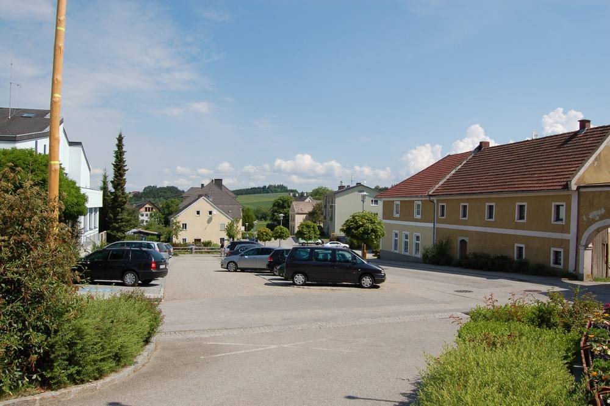

오스트리아 장크트마르틴 면, 환승주차장 2곳 지붕에 태양광 가동…연 30만kWh 전기 면 시설·인근 업체가 모두 쓴다

오버외스터라이히주 뮐크라이스의 장터면, 알러스도르프·슈타펜에트 주차면 82개 덮어…면장 "전력망에 안 보내고 자가소비", 연방·주 보조금으로
오스트리아 오버외스터라이히주 로르바흐 군의 장크트마르틴(뮐크라이스) 장터면이 출퇴근 환승주차장 2곳에 지붕형 태양광을 세워 공식 가동에 들어갔다. 알러스도르프와 슈타펜에트 두 주차장의 태양광 지붕은 모두 82개 주차면을 덮어 햇볕과 비·눈·우박을 막아 주면서 해마다 약 30만kWh의 전기를 만든다. 면은 이 전기를 전력망에 보내지 않고 면 시설과 주변 업체에서 바로 쓰기로 했으며, 만프레트 란처스도르퍼 면장은 이로써 장부상으로는 에너지를 자급하게 됐다고 설명했다. 시공은 업체 Sunport가 맡고 면 건설관리소 직원들이 거들었으며, 연방과 주 정부 보조금이 사업을 가능하게 했지만 설비 용량과 사업비, 보조금 액수는 알려지지 않았다. 마르쿠스 아흐라이트너 주 경제·에너지 담당 각료는 이 면을 모범 사례로 꼽으며 주 안의 태양광 설비가 2018년 1만4,000기에서 지금 15만 기 넘게 늘었고 주 전력의 91%를 재생에너지가 맡고 있다고 말했다. 주 정부는 앞으로 가정용 저장장치 보조에 더 힘을 싣겠다는 방침이다.
시민에너지 관점
프랑스가 2023년 재생에너지 가속법으로 일정 규모 이상 야외 주차장의 절반 이상을 태양광 그늘막 등으로 덮도록 의무화했을 만큼, 주차장 지붕은 새 땅을 깎지 않고 전기를 만드는 공간으로 자리 잡고 있다. 기둥과 지붕을 세우는 값이 땅 위 태양광보다 비싸다는 우려가 있지만, 장크트마르틴처럼 만든 전기를 공공시설과 이웃 업체가 바로 쓰면 바깥에서 사 오는 전기를 줄일 수 있고 이용자는 비와 눈을 피할 지붕을 덤으로 얻는다. 다만 이 사업에는 주민 출자가 없어, 공공부지 태양광의 이익이 주민 가계에까지 닿으려면 주민이 지분을 나눠 갖는 구조가 더해져야 한다. 국내 공영주차장과 환승주차장도 지자체가 부지를 내놓고 주민이 출자해 함께 소유하는 태양광 부지로 먼저 열어야 한다.
출처: Tips 2026-11-05 Martina Gahleitner 원문 보기
オーストリアのザンクト・マルティン、パークアンドライド駐車場2カ所の屋根で太陽光が稼働…年30万kWhを町の施設と近隣企業がすべて消費
オーバーエスターライヒ州ミュールクライスのマルクトゲマインデ、アラースドルフ・シュタッフェンエートの駐車区画82台分を覆う…町長「系統に送らず自家消費」、連邦・州の補助金で
オーストリア・オーバーエスターライヒ州ロールバッハ郡のザンクト・マルティン・イム・ミュールクライス（マルクトゲマインデ）が、通勤者向けのパークアンドライド駐車場2カ所に屋根型の太陽光発電を設置し、正式に稼働させた。アラースドルフとシュタッフェンエートの2つの駐車場の太陽光屋根は計82台分の駐車区画を覆い、日差しや雨・雪・ひょうを防ぎながら、年間約30万kWhの電気をつくる。町はこの電気を電力系統に送らず、町の施設と周辺の企業で直接使うことにしており、マンフレート・ランツァースドルファー町長は、これで帳簿上はエネルギーを自給できるようになったと説明した。施工は企業Sunportが担い、町の建設管理所の職員が手伝った。連邦と州の補助金が事業を可能にしたが、設備容量や事業費、補助金の額は明らかになっていない。マルクス・アッハライトナー州経済・エネルギー担当閣僚は町を模範例に挙げ、州内の太陽光設備は2018年の1万4,000基から現在は15万基超に増え、州の電力の91%を再生可能エネルギーが占めていると述べ、今後は家庭用蓄電池の補助に力を入れる方針を示した。
市民エネルギーの視点
フランスが2023年の再生可能エネルギー加速法で、一定規模以上の屋外駐車場の半分以上を太陽光の日よけなどで覆うよう義務づけたほど、駐車場の屋根は新たに土地を削らずに電気をつくる場として定着しつつある。柱や屋根を建てる費用が地上設置の太陽光より高いという懸念もあるが、ザンクト・マルティンのようにつくった電気を公共施設と近くの企業がすぐに使えば外から買う電気を減らせ、利用者は雨や雪をしのぐ屋根もおまけで得られる。ただしこの事業には住民の出資がなく、公共用地の太陽光の利益が住民の家計にまで届くには、住民が持ち分を分け合う仕組みを加える必要がある。韓国の公営駐車場やパークアンドライド駐車場も、自治体が用地を出し、住民が出資して共に所有する太陽光の用地としてまず開くべきだ。
出典: Tips 2026-11-05 Martina Gahleitner 原文を読む
奥地利米尔县圣马丁镇两处换乘停车场顶棚光伏投运…年发电30万千瓦时全部由镇设施和附近企业消纳
上奥地利州米尔县集镇在阿勒斯多夫和施塔芬埃特覆盖82个停车位…镇长称"不上网，全部自发自用"，靠联邦和州补贴建成
奥地利上奥地利州罗尔巴赫县的米尔县圣马丁集镇在两处通勤换乘停车场建起顶棚式光伏，并正式投入运行。阿勒斯多夫和施塔芬埃特两座停车场的光伏顶棚共覆盖82个停车位，在遮挡阳光和雨、雪、冰雹的同时，每年发电约30万千瓦时。镇里决定这些电力不送入电网，而是由镇属设施和周边企业直接使用；镇长曼弗雷德·兰策斯多费尔说明，这样一来镇里在账面上实现了能源自给。工程由Sunport公司承建，镇建设管理站职员协助；联邦和州政府的补贴使项目得以实现，但装机容量、项目费用和补贴金额均未公开。上奥地利州经济与能源事务州委员马库斯·阿赫莱特纳称该镇为示范案例，并表示州内光伏设施已从2018年的1万4,000套增至目前的15万套以上，可再生能源占全州电力的91%。州政府今后将把更多力量放在家用储能补贴上。
市民能源视角
法国在2023年通过加快可再生能源法，要求一定规模以上的露天停车场一半以上面积用光伏遮阳棚等覆盖，可见停车场顶棚正成为无需新占土地就能发电的空间。有人担心立柱和顶棚的造价高于地面光伏，但像圣马丁这样把所发电力直接供公共设施和邻近企业使用，就能减少外购电力，使用者还能额外得到遮风挡雪的顶棚。不过这个项目没有居民出资；要让公共用地光伏的收益进入居民家庭，还需加上由居民分享股权的结构。韩国的公营停车场和换乘停车场，也应率先开放为由地方政府提供用地、居民出资共同拥有的光伏场地。
来源: Tips 2026-11-05 Martina Gahleitner 查看原文
Austria's St. Martin switches on solar canopies at two park-and-ride car parks, with all 300,000kWh a year used by municipal buildings and nearby businesses
The market town in Upper Austria's Mühlkreis covers 82 parking spaces at Allersdorf and Stapfenedt; the mayor says nothing is fed into the grid, and federal and state subsidies made the project possible
The market town of St. Martin im Mühlkreis, in Rohrbach district in the Austrian state of Upper Austria, has officially switched on solar canopies built over two commuter park-and-ride car parks. The canopies at Allersdorf and Stapfenedt cover 82 parking spaces in total, sheltering cars from sun, rain, snow and hail while generating about 300,000kWh of electricity a year. The town will not feed this power into the grid but use it directly in municipal buildings and nearby businesses, and Mayor Manfred Lanzersdorfer said this makes the town energy self-sufficient on paper. The canopies were installed by the company Sunport with help from the town's maintenance depot staff, and federal and state subsidies made the project possible, though the installed capacity, project cost and subsidy amount have not been disclosed. Markus Achleitner, Upper Austria's state minister for economy and energy, held the town up as a model, saying the number of solar installations in the state has grown from 14,000 in 2018 to more than 150,000 today and that renewables supply 91% of the state's electricity. The state government now plans to put more weight on subsidies for household battery storage.
Citizen Energy View
France's 2023 law to accelerate renewable energy requires larger outdoor car parks to cover at least half their area with solar shade structures or similar, a sign that car park roofs are becoming a place to generate power without clearing new land. Some worry that posts and canopies cost more than ground-mounted solar, but when, as in St. Martin, the power is used straight away by public buildings and neighbouring businesses, it cuts the electricity bought in from outside, and drivers get shelter from rain and snow as a bonus. This project, however, has no resident investment, so for the gains from solar on public land to reach household budgets, a structure in which residents share ownership needs to be added. In Korea, too, public and park-and-ride car parks should be opened first as solar sites where local governments provide the land and residents invest and own the plants together.
Source: Tips 2026-11-05 Martina Gahleitner Read the original